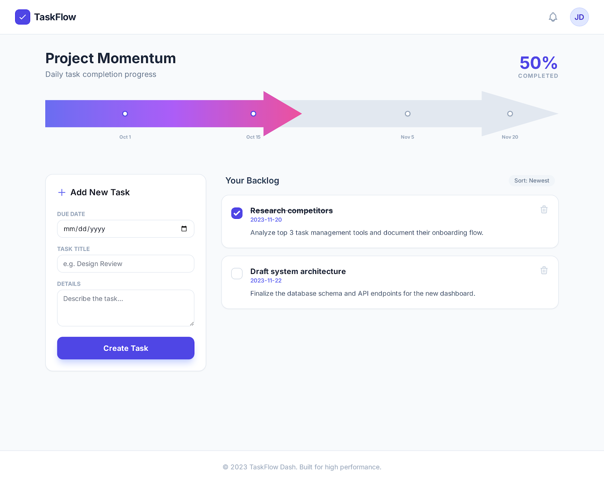

현재 디자인 시스템
컬러 팔레트
Primary
#4F46E5 (Indigo-600)
Accent
#A855F7 (Purple-500)
Highlight
#EC4899 (Pink-500)
Text
#1E293B (Slate-800)
Background
#F8FAFC (Slate-50)
타이포그래피
현재 폰트
Inter (영문)
* Pretendard로 변경 권장 (한국어 지원)
3xl Bold
xl Bold
lg Semibold
sm Regular
xs Bold Uppercase
컴포넌트 스타일
버튼
카드
rounded-2xl + shadow-sm
인풋
배지
rounded-full badge종합 검토 결과
긍정적 요소
- + 화살표 프로그레스 바 - 시각적으로 독특하고 인상적
- + Indigo-Purple-Pink 그라데이션이 트렌디하고 세련됨
- + 둥근 카드(rounded-2xl)와 가벼운 그림자가 현대적
- + 전체적으로 안정적인 레이아웃과 일관된 컬러 체계
- + 여백 활용이 좋고 시각적 계층이 명확
개선 필요 사항
-
!
폰트 변경: Inter -> Pretendard (한국어 지원)
-
!
Footer 연도: 2023 -> 2026으로 수정
-
!
마일스톤 점: w-3 h-3이 작아 인지 어려움, 크기 확대 권장
-
!
삭제 확인: 실수 방지를 위한 confirm 다이얼로그 필요
-
!
터치 영역: 체크박스 주변 패딩 확대 (44px 최소)
-
!
데이터 영속성: localStorage 연동 필수
전체 디자인 방향은 좋습니다. 위의 개선 사항들(폰트, 삭제 확인, 데이터 영속성 등)을 Next.js 구현 단계에서 반영하면 됩니다. 디자인 시안 자체를 수정할 필요는 없고, 개발 시 개선 사항을 적용하는 것을 권장합니다.
원본 디자인 시안
docs/data/screen.png 및 docs/data/code.html에서 가져온 원본입니다.

디자이너A 검토
현대적 감각, 트렌드 관점
긍정 평가
- - 화살표 프로그레스 바가 시각적으로 독특하고 인상적
- - Indigo-Purple-Pink 그라데이션이 트렌디함
- - 둥근 카드(rounded-2xl)와 가벼운 그림자가 현대적
- - 여백 활용이 좋음
개선 제안
Inter는 영문에 좋지만, 한국어 서비스를 위해 Pretendard로 변경 권장. 한글 가독성이 크게 개선됩니다.
h-24 높이가 모바일에서 과도할 수 있음. 모바일에서는 h-16 정도로 축소 권장.
w-3 h-3이 작아서 인지하기 어려움. w-4 h-4 이상으로 확대하고, 라벨 폰트도 키울 것.
"2023"을 "2026"으로 수정 필요.
0~10% 구간에서 화살표 촉 부분이 어색할 수 있음. 최소 width 보정 필요.
디자이너B 검토
다양한 경험, 안정적 디자인 관점
긍정 평가
- - 전체적으로 안정적인 레이아웃
- - 컬러 체계가 일관됨 (Indigo 주색 + Slate 보조)
- - 폼/카드의 시각적 계층이 명확
실용성 관점 이슈
DOM id 기반 제어 -> React 컴포넌트 전환 시 리팩토링 필요. 시안은 참고용으로만 활용.
순수 JS Array -> Next.js useState/useReducer로 전환 필요.
새로고침 시 초기화됨 -> localStorage 또는 API 연동 필수.
영문 날짜(Oct 1) -> YYYY-MM-DD 또는 한국어 형식 권장.
confirm 없이 즉시 삭제 -> 실수 방지를 위한 확인 다이얼로그 필요.
체크박스 w-6 h-6은 적절하나 터치 영역은 최소 44px 필요. 패딩 추가 권장.
empty state는 있으나 loading state가 없음. 스켈레톤 UI 추가 권장.